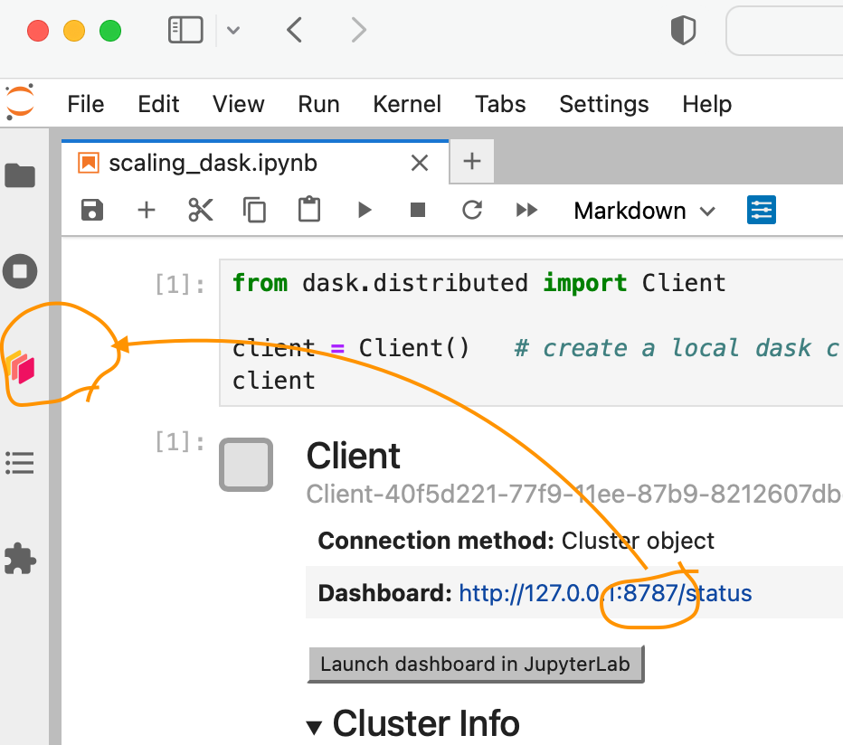

Parallel computing with Dask#
Context#
We will be using Dask with Xarray to parallelize our data analysis. We continue to use the snow index example.
Data#
In this episode, we will be using xxx
Setup#
This episode uses the following Python packages:
pooch [USR+20]
s3fs [S3FsDTeam16]
hvplot [RSB+20]
dask [DaskDTeam16]
graphviz [EGK+03]
numpy [HMvdW+20]
pandas [pdt20]
geopandas [JdBF+20]
Please install these packages if not already available in your Python environment (you might want to take a look at the Setup page of the tutorial).
Packages#
In this episode, Python packages are imported when we start to use them. However, for best software practices, we recommend you to install and import all the necessary libraries at the top of your Jupyter notebook.
Parallelize with Dask#
We know from previous chapter chunking_introduction that chunking is key for analyzing large datasets. In this episode, we will learn to parallelize our data analysis using Dask on our chunked dataset.
What is Dask ?#
Dask scales the existing Python ecosystem: with very or no changes in your code, you can speed-up computation using Dask or process bigger than memory datasets.
Dask is a flexible library for parallel computing in Python.
It is widely used for handling large and complex Earth Science datasets and speed up science.
Dask is powerful, scalable and flexible. It is the leading platform today for data analytics at scale.
It scales natively to clusters, cloud, HPC and bridges prototyping up to production.
The strength of Dask is that is scales and accelerates the existing Python ecosystem e.g. Numpy, Pandas and Scikit-learn with few effort from end-users.
It is interesting to note that at first, Dask has been created to handle data that is larger than memory, on a single computer. It then was extended with Distributed to compute data in parallel over clusters of computers.
How does Dask scale and accelerate your data analysis?#
Dask proposes different abstractions to distribute your computation. In this Dask Introduction section, we will focus on Dask Array which is widely used in pangeo ecosystem as a back end of Xarray.
As shown in the previous section Dask Array is based on chunks. Chunks of a Dask Array are well-known Numpy arrays. By transforming our big datasets to Dask Array, making use of chunk, a large array is handled as many smaller Numpy ones and we can compute each of these chunks independently.

- `Xarray` uses Dask Arrays instead of Numpy when chunking is enabled, and thus all Xarray operations are performed through Dask, which enables distributed processing.
How does Xarray with Dask distribute data analysis?#
When we use chunks with Xarray, the real computation is only done when needed or asked for, usually when invoking compute() or load() functions. Dask generates a task graph describing the computations to be done. When using Dask Distributed a Scheduler distributes these tasks across several Workers.

####Â What is a Dask Distributed cluster ?
A Dask Distributed cluster is made of two main components:
a Scheduler, responsible for handling computations graph and distributing tasks to Workers.
One or several (up to 1000s) Workers, computing individual tasks and storing results and data into distributed memory (RAM and/or worker’s local disk).
A user usually needs Client and Cluster objects as shown below to use Dask Distributed.

Where can we deploy a Dask distributed cluster?#
Dask distributed clusters can be deployed on your laptop or on distributed infrastructures (Cloud, HPC centers, Hadoop, etc.). Dask distributed Cluster object is responsible of deploying and scaling a Dask Cluster on the underlying resources.

Tip
A Dask Cluster can be created on a single machine (for instance your laptop) e.g. there is no need to have dedicated computational resources. However, speedup will only be limited to your single machine resources if you do not have dedicated computational resources!
Dask distributed Client#
The Dask distributed Client is what allows you to interact with Dask distributed Clusters. When using Dask distributed, you always need to create a Client object. Once a Client has been created, it will be used by default by each call to a Dask API, even if you do not explicitly use it.
No matter the Dask API (e.g. Arrays, Dataframes, Delayed, Futures, etc.) that you use, under the hood, Dask will create a Directed Acyclic Graph (DAG) of tasks by analysing the code. Client will be responsible to submit this DAG to the Scheduler along with the final result you want to compute. The Client will also gather results from the Workers, and aggregate it back in its underlying Python process.
Using Client() function with no argument, you will create a local Dask cluster with a number of workers and threads per worker corresponding to the number of cores in the ‘local’ machine. Here, during the workshop, we are running this notebook in Pangeo EOSC cloud deployment, so the ‘local’ machine is the jupyterlab you are using at the Cloud, and the number of cores is the number of cores on the cloud computing resources you’ve been given (not on your laptop).
from dask.distributed import Client
client = Client() # create a local dask cluster on the local machine.
client
Client
Client-b53150f0-797d-11ee-8fe0-000d3a5a04f3
| Connection method: Cluster object | Cluster type: distributed.LocalCluster |
| Dashboard: http://127.0.0.1:8787/status |
Cluster Info
LocalCluster
f05c6311
| Dashboard: http://127.0.0.1:8787/status | Workers: 2 |
| Total threads: 2 | Total memory: 6.76 GiB |
| Status: running | Using processes: True |
Scheduler Info
Scheduler
Scheduler-616afb9f-7a54-4ea7-bf0a-b2b686f84638
| Comm: tcp://127.0.0.1:44331 | Workers: 2 |
| Dashboard: http://127.0.0.1:8787/status | Total threads: 2 |
| Started: Just now | Total memory: 6.76 GiB |
Workers
Worker: 0
| Comm: tcp://127.0.0.1:44413 | Total threads: 1 |
| Dashboard: http://127.0.0.1:36395/status | Memory: 3.38 GiB |
| Nanny: tcp://127.0.0.1:34973 | |
| Local directory: /tmp/dask-scratch-space/worker-oe_9nz_v | |
Worker: 1
| Comm: tcp://127.0.0.1:38089 | Total threads: 1 |
| Dashboard: http://127.0.0.1:39451/status | Memory: 3.38 GiB |
| Nanny: tcp://127.0.0.1:37383 | |
| Local directory: /tmp/dask-scratch-space/worker-76cico06 | |
Inspecting the Cluster Info section above gives us information about the created cluster: we have 2 or 4 workers and the same number of threads (e.g. 1 thread per worker).
- You can also create a local cluster with the `LocalCluster` constructor and use `n_workers` and `threads_per_worker` to manually specify the number of processes and threads you want to use. For instance, we could use `n_workers=2` and `threads_per_worker=2`.
- This is sometimes preferable (in terms of performance), or when you run this tutorial on your PC, you can avoid dask to use all your resources you have on your PC!
Dask Dashboard#
Dask comes with a really handy interface: the Dask Dashboard. It is a web interface that you can open in a separated tab of your browser (but not with he link above, you’ve got to use Jupyterlabs proxy: /user/todaka/proxy/8787/status).
We will learn here how to use it through dask jupyterlab extension.
To use Dask Dashboard through jupyterlab extension on Pangeo EOSC infrastructure, you will just need too look at the html link you have for your jupyterlab, and Dask dashboard port number, as highlighted in the figure below.


Then click the orange icon indicated in the above figure, and type ‘your’ dashboard link (normally, you just need to replace ‘todaka’ to ‘your username’).
You can click several buttons indicated with blue arrows in above figures, then drag and drop to place them as your convenience.

It’s really helpfull to understand your computation and how it is distributed.
Dask Distributed computations on our dataset#
Let’s open the virtual dataset we’ve prepared as in previous episode, select a single location over time, visualize the task graph generated by Dask, and observe the Dask Dashboard.
Read from online kerchunked consolidated dataset#
We will access Long Term TimeSeries of NDVI statistics from OpenStack Object Storage using the Zarr metadata generated with kerchunk, prepared in previous chunking_introduction section using intake
import intake
cat = intake.open_catalog('../data/LTS.yaml')
LTS=cat.LTS.to_dask()
By inspecting any of the variables on the representation above, you’ll see that each data array represents about 85GiB of data, so much more than the availabe memory on this notebook server, and even on the Dask Cluster we created above. But thanks to chunking, we can still analyze it!
save = LTS.sel(lat=45.50, lon=9.36, method='nearest')['min'].mean()
save
<xarray.DataArray 'min' ()>
dask.array<mean_agg-aggregate, shape=(), dtype=float32, chunksize=(), chunktype=numpy.ndarray>
Coordinates:
lat float64 45.5
lon float64 9.357Did you notice something on the Dask Dashboard when running the two previous cells?
We didn’t ‘compute’ anything. We just built a Dask task graph with it’s size indicated as count above, but did not ask Dask to return a result.
Here, you can check ‘Dask graph’ with how many layers of graph you have, to estimate the complexity of your computation.
It is indicated that you have ‘7 graph’. this can be optimised with following step
Lets try to plot the dask graph before computation and understand what dask workers will do to compute the value we asked for.
Optimize the task graph#
import dask
(save,) = dask.optimize(save)
save.data
|
||||||||||||||||
Now our graph is reduced 1. Lets try to visualise it:
save.data.visualize()
Compute on the dask workers#
save.compute()
<xarray.DataArray 'min' ()>
array(0.31844446, dtype=float32)
Coordinates:
lat float64 45.5
lon float64 9.357Calling compute on our Xarray object triggered the execution on Dask Cluster side.
You should be able to see how Dask is working on Dask Dashboard.
- You can re-open the LTS with chunks=({"time":-1}) option, and try to visualize the task graph, size of each chunk, .... How did it changed? Do you see the difference of task graph using chunks keyword argument when opening the dataset?
Close client to terminate local dask cluster#
The Client and associated LocalCluster object will be automatically closed when your Python session ends. When using Jupyter notebooks, we recommend to close it explicitely whenever you are done with your local Dask cluster.
client.close()
Scaling your Computation using Dask Gateway.#
For this workshop, according to the Pangeo EOSC deployment, you will learn how to use Dask Gateway to manage Dask clusters over Kubernetes, allowing to run our data analysis in parallel e.g. distribute tasks across several workers.
Lets set up your Dask cluster through Dask Gateway.
As Dask Gateway is configured by default on this ifnrastructure, you just need to execute the following cells.
from dask_gateway import Gateway
gateway = Gateway()
#WARNING In case you already created gateway cluster, you will see list of your clusters.
#And this cell will kill all your orphan clusters.
#Please clean them before you make a new cluster using following command
clusters = gateway.list_clusters()
print(clusters)
for cluster in clusters:
cluster = gateway.connect(cluster.name)
cluster.shutdown()
Create a new Dask cluster with the Dask Gateway#
cluster = gateway.new_cluster()
cluster.scale(4)
cluster
Let’s setup the Dask Dashboard with your new cluster.
This time, just click on the link to open the dashboard into another tab. Then copy and past the link of web site appearing to the dask lab-extension

Get a client from the Dask Gateway Cluster#
As stated above, creating a Dask Client is mandatory in order to perform following Daks computations on your Dask Cluster.
## Please don't execute this cell, it is needed for building the Jupyter Book
cluster = None
from distributed import Client
if cluster:
client = Client(cluster) # create a dask Gateway cluster
else:
client = Client() # create a local dask cluster on the machine.
client
Client
Client-c220cb01-797d-11ee-8fe0-000d3a5a04f3
| Connection method: Cluster object | Cluster type: distributed.LocalCluster |
| Dashboard: http://127.0.0.1:8787/status |
Cluster Info
LocalCluster
b44d4f28
| Dashboard: http://127.0.0.1:8787/status | Workers: 2 |
| Total threads: 2 | Total memory: 6.76 GiB |
| Status: running | Using processes: True |
Scheduler Info
Scheduler
Scheduler-cca33c77-3dee-4cc0-8660-533a341a6c89
| Comm: tcp://127.0.0.1:41975 | Workers: 2 |
| Dashboard: http://127.0.0.1:8787/status | Total threads: 2 |
| Started: Just now | Total memory: 6.76 GiB |
Workers
Worker: 0
| Comm: tcp://127.0.0.1:44035 | Total threads: 1 |
| Dashboard: http://127.0.0.1:46031/status | Memory: 3.38 GiB |
| Nanny: tcp://127.0.0.1:32991 | |
| Local directory: /tmp/dask-scratch-space/worker-mknnv_wx | |
Worker: 1
| Comm: tcp://127.0.0.1:43553 | Total threads: 1 |
| Dashboard: http://127.0.0.1:33551/status | Memory: 3.38 GiB |
| Nanny: tcp://127.0.0.1:37763 | |
| Local directory: /tmp/dask-scratch-space/worker-m1xp8xxh | |
Global LTS computation#
In the previous episode, we used Long-term Timeseries for the region of Lombardy e.g. a very small area that was extracted upfront for simplicity. Now we will use the original dataset that has a global coverage, and work directly on it to extract our AOI and perform computations.
Lets check our LTS data we have loaded before.
LTS
<xarray.Dataset>
Dimensions: (lat: 15680, lon: 40320, time: 36)
Coordinates:
* lat (lat) float64 80.0 79.99 79.98 79.97 ... -59.97 -59.98 -59.99
* lon (lon) float64 -180.0 -180.0 -180.0 -180.0 ... 180.0 180.0 180.0
* time (time) float64 nan 1.0 2.0 3.0 4.0 5.0 ... 31.0 32.0 33.0 34.0 35.0
Data variables:
crs object ...
max (time, lat, lon) float32 dask.array<chunksize=(1, 1207, 3102), meta=np.ndarray>
mean (time, lat, lon) float32 dask.array<chunksize=(1, 1207, 3102), meta=np.ndarray>
median (time, lat, lon) float32 dask.array<chunksize=(1, 1207, 3102), meta=np.ndarray>
min (time, lat, lon) float32 dask.array<chunksize=(1, 1207, 3102), meta=np.ndarray>
nobs (time, lat, lon) float32 dask.array<chunksize=(1, 1207, 3102), meta=np.ndarray>
stdev (time, lat, lon) float32 dask.array<chunksize=(1, 1207, 3102), meta=np.ndarray>
Attributes: (12/19)
Conventions: CF-1.6
archive_facility: VITO
copyright: Copernicus Service information 2021
history: 2021-03-01 - Processing line NDVI LTS
identifier: urn:cgls:global:ndvi_stats_all:NDVI-LTS_1999-2019-0...
institution: VITO NV
... ...
references: https://land.copernicus.eu/global/products/ndvi
sensor: VEGETATION-1, VEGETATION-2, VEGETATION
source: Derived from EO satellite imagery
time_coverage_end: 2019-12-31T23:59:59Z
time_coverage_start: 1999-01-01T00:00:00Z
title: Normalized Difference Vegetation Index: Long Term S...Fix time coordinate#
As observed data are coming with a predefined year. To let xarray automatically align the LTS with the lastest NDVI values, the time dimension needs to be shifted to the NDVI values.
import pandas as pd
import numpy as np
dates_2022 = pd.date_range('20220101', '20221231')
time_list = dates_2022[np.isin(dates_2022.day, [1,11,21])]
LTS = LTS.assign_coords(time=time_list)
LTS
<xarray.Dataset>
Dimensions: (lat: 15680, lon: 40320, time: 36)
Coordinates:
* lat (lat) float64 80.0 79.99 79.98 79.97 ... -59.97 -59.98 -59.99
* lon (lon) float64 -180.0 -180.0 -180.0 -180.0 ... 180.0 180.0 180.0
* time (time) datetime64[ns] 2022-01-01 2022-01-11 ... 2022-12-21
Data variables:
crs object ...
max (time, lat, lon) float32 dask.array<chunksize=(1, 1207, 3102), meta=np.ndarray>
mean (time, lat, lon) float32 dask.array<chunksize=(1, 1207, 3102), meta=np.ndarray>
median (time, lat, lon) float32 dask.array<chunksize=(1, 1207, 3102), meta=np.ndarray>
min (time, lat, lon) float32 dask.array<chunksize=(1, 1207, 3102), meta=np.ndarray>
nobs (time, lat, lon) float32 dask.array<chunksize=(1, 1207, 3102), meta=np.ndarray>
stdev (time, lat, lon) float32 dask.array<chunksize=(1, 1207, 3102), meta=np.ndarray>
Attributes: (12/19)
Conventions: CF-1.6
archive_facility: VITO
copyright: Copernicus Service information 2021
history: 2021-03-01 - Processing line NDVI LTS
identifier: urn:cgls:global:ndvi_stats_all:NDVI-LTS_1999-2019-0...
institution: VITO NV
... ...
references: https://land.copernicus.eu/global/products/ndvi
sensor: VEGETATION-1, VEGETATION-2, VEGETATION
source: Derived from EO satellite imagery
time_coverage_end: 2019-12-31T23:59:59Z
time_coverage_start: 1999-01-01T00:00:00Z
title: Normalized Difference Vegetation Index: Long Term S...Clip LTS over Lombardia#
As in previous episodes, we use a shapefile over Italy to select data over this Area of Interest (AOI).
import geopandas as gpd
try:
GAUL = gpd.read_file('../data/Italy.geojson')
except:
GAUL = gpd.read_file('zip+https://mars.jrc.ec.europa.eu/asap/files/gaul1_asap.zip')
AOI_name = 'Lombardia'
AOI = GAUL[GAUL.name1 == AOI_name]
AOI_poly = AOI.geometry
AOI_poly
14 POLYGON ((10.23973 46.62177, 10.25084 46.61110...
Name: geometry, dtype: geometry
We first select a geographical area that covers Lombardia (so that we have a first reduction from the global coverage) and then clip using the shapefile to avoid useless pixels.
LTS_AOI = LTS.sel(lat=slice(46.5,44.5), lon=slice(8.5,11.5))
LTS_AOI.rio.write_crs(4326, inplace=True)
<xarray.Dataset>
Dimensions: (lat: 224, lon: 336, time: 36)
Coordinates:
crs int64 0
* lat (lat) float64 46.49 46.48 46.47 46.46 ... 44.53 44.52 44.51 44.5
* lon (lon) float64 8.5 8.509 8.518 8.527 ... 11.46 11.47 11.48 11.49
* time (time) datetime64[ns] 2022-01-01 2022-01-11 ... 2022-12-21
Data variables:
max (time, lat, lon) float32 dask.array<chunksize=(1, 224, 336), meta=np.ndarray>
mean (time, lat, lon) float32 dask.array<chunksize=(1, 224, 336), meta=np.ndarray>
median (time, lat, lon) float32 dask.array<chunksize=(1, 224, 336), meta=np.ndarray>
min (time, lat, lon) float32 dask.array<chunksize=(1, 224, 336), meta=np.ndarray>
nobs (time, lat, lon) float32 dask.array<chunksize=(1, 224, 336), meta=np.ndarray>
stdev (time, lat, lon) float32 dask.array<chunksize=(1, 224, 336), meta=np.ndarray>
Attributes: (12/19)
Conventions: CF-1.6
archive_facility: VITO
copyright: Copernicus Service information 2021
history: 2021-03-01 - Processing line NDVI LTS
identifier: urn:cgls:global:ndvi_stats_all:NDVI-LTS_1999-2019-0...
institution: VITO NV
... ...
references: https://land.copernicus.eu/global/products/ndvi
sensor: VEGETATION-1, VEGETATION-2, VEGETATION
source: Derived from EO satellite imagery
time_coverage_end: 2019-12-31T23:59:59Z
time_coverage_start: 1999-01-01T00:00:00Z
title: Normalized Difference Vegetation Index: Long Term S...We apply a mask using rio.clip
LTS_AOI = LTS_AOI.rio.clip(AOI_poly, crs=4326)
LTS_AOI
<xarray.Dataset>
Dimensions: (lat: 203, lon: 327, time: 36)
Coordinates:
* lat (lat) float64 46.49 46.48 46.47 46.46 ... 44.71 44.71 44.7 44.69
* lon (lon) float64 8.509 8.518 8.527 8.536 ... 11.39 11.4 11.41 11.42
* time (time) datetime64[ns] 2022-01-01 2022-01-11 ... 2022-12-21
crs int64 0
Data variables:
max (time, lat, lon) float32 dask.array<chunksize=(1, 203, 327), meta=np.ndarray>
mean (time, lat, lon) float32 dask.array<chunksize=(1, 203, 327), meta=np.ndarray>
median (time, lat, lon) float32 dask.array<chunksize=(1, 203, 327), meta=np.ndarray>
min (time, lat, lon) float32 dask.array<chunksize=(1, 203, 327), meta=np.ndarray>
nobs (time, lat, lon) float32 dask.array<chunksize=(1, 203, 327), meta=np.ndarray>
stdev (time, lat, lon) float32 dask.array<chunksize=(1, 203, 327), meta=np.ndarray>
Attributes: (12/19)
Conventions: CF-1.6
archive_facility: VITO
copyright: Copernicus Service information 2021
history: 2021-03-01 - Processing line NDVI LTS
identifier: urn:cgls:global:ndvi_stats_all:NDVI-LTS_1999-2019-0...
institution: VITO NV
... ...
references: https://land.copernicus.eu/global/products/ndvi
sensor: VEGETATION-1, VEGETATION-2, VEGETATION
source: Derived from EO satellite imagery
time_coverage_end: 2019-12-31T23:59:59Z
time_coverage_start: 1999-01-01T00:00:00Z
title: Normalized Difference Vegetation Index: Long Term S...Lets keep our LTS_Lombardia on the memory of your Dask cluster, distributed on every workers. To do that we will use .persist(). Please look at the dashboard during the computation.
%%time
LTS_AOI.persist()
CPU times: user 44 ms, sys: 11.5 ms, total: 55.4 ms
Wall time: 55.5 ms
<xarray.Dataset>
Dimensions: (lat: 203, lon: 327, time: 36)
Coordinates:
* lat (lat) float64 46.49 46.48 46.47 46.46 ... 44.71 44.71 44.7 44.69
* lon (lon) float64 8.509 8.518 8.527 8.536 ... 11.39 11.4 11.41 11.42
* time (time) datetime64[ns] 2022-01-01 2022-01-11 ... 2022-12-21
crs int64 0
Data variables:
max (time, lat, lon) float32 dask.array<chunksize=(1, 203, 327), meta=np.ndarray>
mean (time, lat, lon) float32 dask.array<chunksize=(1, 203, 327), meta=np.ndarray>
median (time, lat, lon) float32 dask.array<chunksize=(1, 203, 327), meta=np.ndarray>
min (time, lat, lon) float32 dask.array<chunksize=(1, 203, 327), meta=np.ndarray>
nobs (time, lat, lon) float32 dask.array<chunksize=(1, 203, 327), meta=np.ndarray>
stdev (time, lat, lon) float32 dask.array<chunksize=(1, 203, 327), meta=np.ndarray>
Attributes: (12/19)
Conventions: CF-1.6
archive_facility: VITO
copyright: Copernicus Service information 2021
history: 2021-03-01 - Processing line NDVI LTS
identifier: urn:cgls:global:ndvi_stats_all:NDVI-LTS_1999-2019-0...
institution: VITO NV
... ...
references: https://land.copernicus.eu/global/products/ndvi
sensor: VEGETATION-1, VEGETATION-2, VEGETATION
source: Derived from EO satellite imagery
time_coverage_end: 2019-12-31T23:59:59Z
time_coverage_start: 1999-01-01T00:00:00Z
title: Normalized Difference Vegetation Index: Long Term S...Get NDVI for 2022 over Lombardia#
We re-use the file we created during the first episode. If the file is missing it will be downloaded from Zenodo.
import pooch
try:
cgls_ds = xr.open_dataset('../data/C_GLS_NDVI_20220101_20220701_Lombardia_S3_2_masked.nc')
except:
cgls_file = pooch.retrieve(
url="https://zenodo.org/record/6969999/files/C_GLS_NDVI_20220101_20220701_Lombardia_S3_2_masked.nc",
known_hash="md5:be3f16913ebbdb4e7af227f971007b22",
path=f".",)
cgls_ds = xr.open_dataset(cgls_file)
cgls_ds
Downloading data from 'https://zenodo.org/record/6969999/files/C_GLS_NDVI_20220101_20220701_Lombardia_S3_2_masked.nc' to file '/home/runner/work/pangeo-openeo-BiDS-2023/pangeo-openeo-BiDS-2023/tutorial/part3/3bcb6b0879f7f1f3eebff65b142241cf-C_GLS_NDVI_20220101_20220701_Lombardia_S3_2_masked.nc'.
---------------------------------------------------------------------------
NameError Traceback (most recent call last)
Cell In[17], line 3
2 try:
----> 3 cgls_ds = xr.open_dataset('../data/C_GLS_NDVI_20220101_20220701_Lombardia_S3_2_masked.nc')
4 except:
NameError: name 'xr' is not defined
During handling of the above exception, another exception occurred:
NameError Traceback (most recent call last)
Cell In[17], line 9
4 except:
5 cgls_file = pooch.retrieve(
6 url="https://zenodo.org/record/6969999/files/C_GLS_NDVI_20220101_20220701_Lombardia_S3_2_masked.nc",
7 known_hash="md5:be3f16913ebbdb4e7af227f971007b22",
8 path=f".",)
----> 9 cgls_ds = xr.open_dataset(cgls_file)
10 cgls_ds
NameError: name 'xr' is not defined
NDVI_AOI = cgls_ds.NDVI.rio.write_crs(4326, inplace=True)
NDVI_AOI = NDVI_AOI.rio.clip(AOI_poly, crs=4326)
NDVI_AOI
The nominal spatial resolution of the Long term statistics is 1km. As the current NDVI product has a nominal spatial resolution of 300m a re projection is needed. RioXarray through RasterIO that wraps the GDAL method can take care of this. More info about all the options can be found here.
NDVI_1k = NDVI_AOI.rio.reproject_match(LTS_AOI)
NDVI_1k = NDVI_1k.rename({'x': 'lon', 'y':'lat'})
VCI = ((NDVI_1k - LTS_AOI['min']) / (LTS_AOI['max'] - LTS_AOI['min'])) * 100
VCI.name = 'VCI'
VCI
%%time
from hvplot import xarray
VCI.hvplot(x = 'lon', y = 'lat',
cmap='RdYlGn', clim=(-200,+200), alpha=0.7,
geo=True, tiles= 'CartoLight',
title=f'CGLS VCI {AOI_name} {VCI.isel(time=-1).time.dt.date.data}',
width=400, height=300,
widget_location='left_top'
)
- Try moving time slider to see how Dask computes and load data on the fly (observe well the dask dashboard!)
Visualize LTS statistics#
Lets try to scale out the visualisation of LTS statistic datas. We will set an arbitaly size to see how dask behaves.
size=0 # You can try later, for example size=10, 50, 100
LTS_plot=LTS.sel(lat=slice(80,20), lon=slice(-15,30+size))#.min(dim='time')
LTS_plot
import holoviews as hv
import hvplot.xarray
plots = [LTS_plot[z].hvplot.image(x = 'lon', y = 'lat',
cmap='RdYlGn', clim=(0.0,0.9)
, alpha=0.7,rasterize=True,
geo=True, tiles= 'CartoLight',
width=400, height=300) for z in ['min','max']]
hv.Layout(plots).cols(1).opts(title='LTS NDVI statistics (Minimum and Maximum)')
- Compare the data size and 'used' data size for each worker in dask dashboard
- Lets try to zoom. What happend with your plot? How was the dask dashboard reacted with zooming?
- What is rastersize=True ? (Hint: https://hvplot.holoviz.org/user_guide/Customization.html#datashading-options)
- Lets try to scale out using 'cluster.scale(6)' and use size=10 (or 50, 100...)
client.close()
cluster.shutdown()
Packages citation#
- EGK+03
John Ellson, Emden R. Gansner, Eleftherios Koutsofios, Stephen C. North, and Gordon Woodhull. Graphviz and dynagraph – static and dynamic graph drawing tools. In GRAPH DRAWING SOFTWARE, 127–148. Springer-Verlag, 2003.
- HMvdW+20
Charles R. Harris, K. Jarrod Millman, Stéfan J. van der Walt, Ralf Gommers, Pauli Virtanen, David Cournapeau, Eric Wieser, Julian Taylor, Sebastian Berg, Nathaniel J. Smith, Robert Kern, Matti Picus, Stephan Hoyer, Marten H. van Kerkwijk, Matthew Brett, Allan Haldane, Jaime Fernández del RÃo, Mark Wiebe, Pearu Peterson, Pierre Gérard-Marchant, Kevin Sheppard, Tyler Reddy, Warren Weckesser, Hameer Abbasi, Christoph Gohlke, and Travis E. Oliphant. Array programming with NumPy. Nature, 585(7825):357–362, September 2020. URL: https://doi.org/10.1038/s41586-020-2649-2, doi:10.1038/s41586-020-2649-2.
- HH17
S. Hoyer and J. Hamman. Xarray: N-D labeled arrays and datasets in Python. Journal of Open Research Software, 2017. URL: https://doi.org/10.5334/jors.148, doi:10.5334/jors.148.
- JdBF+20
Kelsey Jordahl, Joris Van den Bossche, Martin Fleischmann, Jacob Wasserman, James McBride, Jeffrey Gerard, Jeff Tratner, Matthew Perry, Adrian Garcia Badaracco, Carson Farmer, Geir Arne Hjelle, Alan D. Snow, Micah Cochran, Sean Gillies, Lucas Culbertson, Matt Bartos, Nick Eubank, maxalbert, Aleksey Bilogur, Sergio Rey, Christopher Ren, Dani Arribas-Bel, Leah Wasser, Levi John Wolf, Martin Journois, Joshua Wilson, Adam Greenhall, Chris Holdgraf, Filipe, and François Leblanc. Geopandas/geopandas: v0.8.1. July 2020. URL: https://doi.org/10.5281/zenodo.3946761, doi:10.5281/zenodo.3946761.
- pdt20
The pandas development team. Pandas-dev/pandas: pandas. February 2020. URL: https://doi.org/10.5281/zenodo.3509134, doi:10.5281/zenodo.3509134.
- RSB+20
Philipp Rudiger, Jean-Luc Stevens, James A. Bednar, Bas Nijholt, Andrew, Chris B, Achim Randelhoff, Jon Mease, Vasco Tenner, maxalbert, Markus Kaiser, ea42gh, Jordan Samuels, stonebig, Florian LB, Andrew Tolmie, Daniel Stephan, Scott Lowe, John Bampton, henriqueribeiro, Irv Lustig, Julia Signell, Justin Bois, Leopold Talirz, Lukas Barth, Maxime Liquet, Ram Rachum, Yuval Langer, arabidopsis, and kbowen. Holoviz/holoviews: version 1.13.3. June 2020. URL: https://doi.org/10.5281/zenodo.3904606, doi:10.5281/zenodo.3904606.
- USR+20
Leonardo Uieda, Santiago Rubén Soler, Rémi Rampin, Hugo van Kemenade, Matthew Turk, Daniel Shapero, Anderson Banihirwe, and John Leeman. Pooch: a friend to fetch your data files. Journal of Open Source Software, 5(45):1943, 2020. URL: https://doi.org/10.21105/joss.01943, doi:10.21105/joss.01943.
- DaskDTeam16
Dask Development Team. Dask: Library for dynamic task scheduling. 2016. URL: https://dask.org.
- S3FsDTeam16
S3Fs Development Team. S3Fs. 2016. URL: fsspec/s3fs.